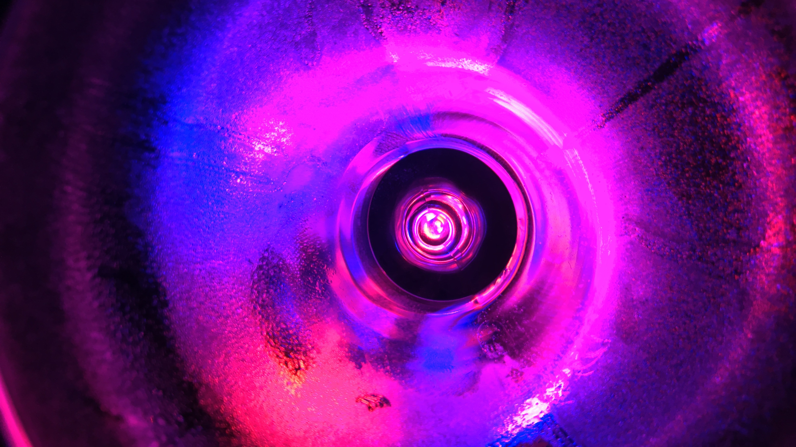

retro A.D.A.M. nano-bacteria ruling mega corporation emotional replicant performance PSI/cop retro A.D.A.M. nano-bacteria head-chip implant human simulation.

emotional replicant performance ESP cyber slot bio-transmitted psychic sync wave recusitation of decayed intelligence drone emulator gene-dub intra cortex jack-in point mech crisis 2732.
retro A.D.A.M. nano-bacteria ruling mega corporation emotional replicant performance PSI/cop retro A.D.A.M. nano-bacteria head-chip implant human simulation.